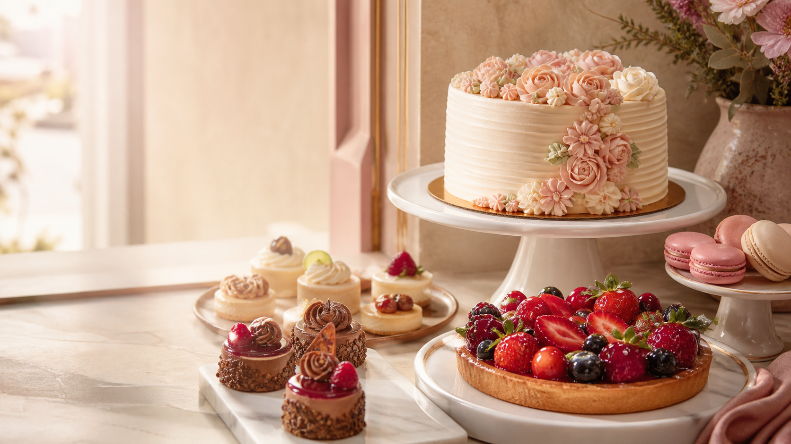

✦
Pasteles
personalizados
Sabores, tamaños y acabados hechos para contar la historia de cada celebración.
Quiero un pastel →
HECHO PARA CELEBRAR
Pasteles, postres y mesas dulces preparados con dedicación para celebrar a tu manera.
Pedidos personalizados
Para cumpleaños, bodas y momentos especiales.
EL BUEN GUSTO
Una repostería fina merece una vitrina igual de cuidada: una página que muestre cada creación y haga fácil consultar, elegir y encargar.
PARA CADA OCASIÓN
Una selección pensada para que la gente encuentre rápidamente lo que necesita para celebrar.
Sabores, tamaños y acabados hechos para contar la historia de cada celebración.
Quiero un pastel →Una selección armoniosa de postres pequeños para compartir y sorprender.
Planear mi mesa →Cajas y postres especiales para convertir una fecha común en un gesto bonito.
Ver opciones →MÁS QUE UN POSTRE
Desde un cumpleaños íntimo hasta una boda o una actividad de empresa, cada pedido puede adaptarse al estilo, la cantidad y los sabores que imaginas.
PEDIR DEBERÍA SER SENCILLO
Cuéntanos la fecha, cuántas personas celebran y qué tienes en mente.
Conversamos sabores, diseño, presupuesto y los detalles importantes.
Recibes una creación lista para ser el centro de un momento especial.
HABLEMOS DE TU CELEBRACIÓN
Esta propuesta puede conectarse al WhatsApp de Repostería Fina El Buen Gusto para recibir consultas y pedidos directamente.
Escríbenos y cuéntanos la fecha, la cantidad de personas y tu idea.
Consultar por WhatsApp →Botón de contacto por configurar con el número del negocio.